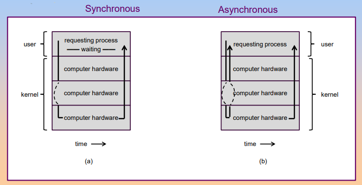
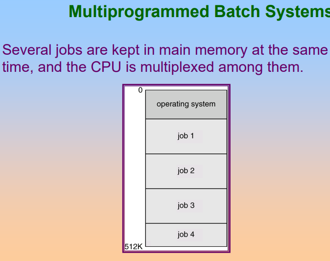

Intro
What Operating Systems Do?
A program that acts as an intermediary between a user of a computer and the computer hardware.

In user view, depending the number using this computer, operating system does differently:
- For single user: the operating system is designed mostly for ease of use and non paid to resource utilization
- For many user: maximize resource utilization
In system view, operating system is
- Resource allocator
- Control program
Defining Operating System
In general, we have no completely adequate definition of an operating system.
A common definition is that operating system is the one program running at all times on the computer. This program is usually called as kernel. Along with kernel, we have two types of programs:
- System programs: associated with the operating system but are not necessarily part of the kernel
- Application programs
Computer-System Organization
Operating System Structure
I/O Structure
There are two I/O methods:

- Synchronous: after I/O starts, control returns to user program only upon I/O completion.
- Asynchronous: after I/O starts, control returns to user program without waiting for I/O completion.
Direct Memory Access Structure
Device controller transfers blocks of data from buffer storage directly to main memory without CPU intervention, used for hight-speed I/O devices able to transmit information at close to memory speeds.
Storage Structure
Storage systems organized in hierarchy, as speed, cost, volatility.
Caching: copying information into faster storage system, main memory can be viewed as a last cache for secondary storage.

Computer System Architecture
- Single-processor Systems
- Multi-processor Systems
- Clustered Systems
Operation System Structure
Multiprogramming need for efficiency. Single user cannot keep CPU and I/O devices busy at all times. Multiprogramming organizes jobs so CPU always has one to execute. Several jobs are kept in main memory at the same time, and the CPU is multiplexed among them.
Timesharing(multitasking) is logical extension in which CPU switches jobs so frequently that users can interact with each jobs while it is running, creating interactive computing.


OS need these features for multiprogramming:
- I/O routine supplied by the system
- Memory management, the system must allocate the memory to several jobs
- CPU scheduling, the system must choose among several jobs ready to run
- Allocation of devices
Operating System Operations
Interupt
- Interrupt driven by hardware
- Software error or request create exception or trap
- Other process problems: infinite loop, processes modifying each other or operating system.
Dual Mode
Dual-mode operation allows OS to protect itself and other system components.
- User Mode
- Kernel Mode.
And there is a mode bit provided by hardware, providing ability to distinguish when system is running user code or kernel code. Some instructions designated as privileged, only executable in kernel mode. System call change mode to kernel mode, return from call resets it to user mode.
Transition from user to kernel mode:
Timer to prevent infinite loop/ process hogging resources.
- Set interrupt after specific period
- Operating system decrements counter
- When counter zero generate an interrupt
- Set up before scheduling process to regain control or terminate program that exceeds alloted time.
Process Management
A process is a program in execution. It is a unit of work within the system. Program is a passive entity, process is an active entity. Process needs resources to accomplish its task:
- CPU, memory, I/O and files
- data
And process termination requires reclaim of any reusable resources.
Single-threaded process has one program counter specifying location of next instruction to execute. Multi-threaded process has one program counter per thread.
Operating system is responsible for the following activities in connection with process management:
- Creating and deleting both user and system process
- Suspending and resuming processes
- Providing mechanisms for process synchronization
- Providing mechanism for process communication
- Providing mechanisms for deadlock handling
Memory Management
Memory management determines what is in memory when optimizing CPU utilization and computer response to users.
- Keeping track of which parts of memory are currently being used and by whom
- Deciding which processes and data to move into and out of memory
- Allocating and deallocating memory space as needed
Storage Management
OS provides uniform, logical view of information storage.
- Abstracts physical properties to logical storage unit: file
- Each medium is controlled by device
- File System management
Mass-Storage Management
Proper management is of central importance.
I/O Subsystem
One purpose of OS is to hide peculiarities of hardware devices from the user.
I/O subsystem responsible for
- Memory management of I/O including buffering, caching, spooling
- General device-driver interface
- Drivers fro specific hardware devices
Protection and Security
Protection: any mechanism for controlling access of processes or users to resources defined by the OS.
Security: defense of the system against internal and external attacks.
Systems generally first distinguish among users, to determine who can do what.
- User identities include name and associated number, one per user
- User ID then associated with all files, processes of tha user to determine access control
- Group ID allows set of users to be defined and controls managed, then be associated with processes and files
And we have privilege escalation allows user to change to effective ID with more rights.
System and Computing Environment
Time-Sharing Systems-Interactive Computing
The CPU is multiplexed among serveral jobs that are kept in memory and on disk, and the concept time slot is used to describe one single job use the CPU time.
Parallel Systems
Multiprocessor systems with more than one CPU in close communication. The advantages of parallel system:
- Increased throughput
- Economical
- Increased reliability
There are two kinds of paralled systems:
-
Symmetric multiprocessing
SMPEach processor runs identical copy of the operating system. Many processes can run at once without performace deterioration. Most modern operating systems support SMP
-
Asymmertic multiprocessing
Each processor is assigned a specific task, master processor schedules and allocated work to slave processors. Most common in extremely large systems.
Distributed Systems
Distribute the computation among serveral physical processors. Loosely coulped system: each processor has its own local memory, processors communicate with one another through various communications lines,such as high-speed buses or telephone lins. Distributed systems has advantages:
- Resources sharing
- Computation speed up - load sharing
- Reliability
- Communications
Distributed systems require networking infratructure, local area networks (LAN) or wide area networks (WAN) both are ok. A distribued system can be either client-server or peer-to-peer systems.
Clustered Systems
Clustering allows two or more systems to share storage, provides high reliability.
- Asymmetric clustering: one server runs the application while other servers standby.
- Symmetic clustering: all N hosts are running the application
Real-Time Systems
Ofter used as a control device in a dedicated application such as controlling scientific experiments, medical imaging systems, industrial control systems and some display systems. Real time systems has well-defined fixed-time constraints.
Real time systems may be either hard or soft real-time.
- Hard real-time: secondary storage limited or absent, data stored in short term memory or read-only memory. This mode will conflicts with time-sharing systems, not supported by general-purpose operating systems
- Soft real-time: limited utility in industrial control of robotics, useful in applications but requiring advanced operating-system features
Handheld Systems
The handheld systems is the operating systems used by personal digital assistants (PDAs) or cellular telephones. The issues with handheld systems are:
- Limited memory
- Slow processors
- Small display screens